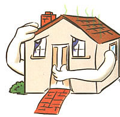

BITS & PIECES
You've got the sniffles. Your eyes are watery and you've got a sore throat, too. But, hey, it's winter; what else can you expect in the thick of cold and flu season, right?
Maybe. But while you're downing zinc lozenges and chicken soup, consider this: eye, nose, and throat irritations, wheezing, coughing, skin rashes, and severe allergic reactions may result from extensive exposure to indoor air pollution. Elevated levels of indoor air pollution have also been linked to headaches, dizziness, and fatigue.
Think you're not at risk 'cause you live where the air is fresh and clean? Think again. Recent studies have shown that the air within homes (even country homes) and other buildings can actually be more seriously polluted than the outdoor air in even the largest cities. In fact, the Environmental Protection Agency (EPA) counts indoor air pollution among the five most urgent environmental problems facing the United States. But there are ways to combat indoor air pollution. And at least one organization, the New York-based Mothers & Others for a Livable Planet (M&O), is committed to showing you how.
A national nonprofit advocacy group started in 1989 by actress Meryl Streep, M&O is dedicated to teaching consumers - and particularly women, who do much of the household buying - how to shop "green."
"Consumers can [prompt] environmental changes through their pocketbooks and by making manufacturers aware of their environmental concerns," says Aisha Ikramuddin, research editor of M&O's The Green Guide, a monthly newsletter, designed to raise consumer awareness of toxic products and their eco-friendly alternatives, that goes out to the group's 35,000 members.
The Green Guide recently tackled the issue of indoor air pollution - a problem exacerbated during the winter months when windows and doors are shut tight against the cold. "The big problem in winter is that there is not good ventilation," says Ikramuddin, who notes that today's homes are being made increasingly airtight to conserve energy-trapping not only heat, but also potentially harmful pollutants. "It's a tradeoff," admits Ikramuddin. "If you open your windows, you improve ventilation and air quality, but you lose energy efficiency."
Among the biggest indoor-air-polluting culprits identified by M&O are pressed-wood products like plywood and particleboard, which are assembled using urea-formaldehyde (UF) glues and adhesives. Formaldehyde has been deemed a probable human carcinogen by the EPA. It's also a known irritant that can cause or exacerbate allergic reactions. Nevertheless, it continues to be widely used to manufacture construction materials and household furniture and is commonly found in cabinets and paneling, walls, floors, textiles, and roofs. Formaldehyde is also used to produce permanent-press clothing and curtains, as well as to preserve some paints. All of these products can "offgas" formaldehyde, contributing to poor indoor air quality.
"All of us are exposed to a certain amount of formaldehyde everyday," says George Semeniuk, EPA Formaldehyde Project Manager in the Office of Pollution Prevention and Toxics. "What concerns us are elevated levels."
Perhaps the scariest thing about indoor air pollution is that you don't have to do anything in particular to put yourself in harm's way. Just going about your daily business is enough. The chairs on which you sit, the desk at which you work, and the kitchen in which you eat are all possible sources of formaldehyde.
Because formaldehyde and other indoor air pollutants can induce symptoms that look very much like the common cold or flu, faulty diagnoses are not uncommon. To avoid this pitfall, the EPA's Indoor Air Quality (IAQ) division recommends that you pay particular attention to where and when you experience symptoms. If you find yourself sniffling or coughing only after you come indoors, you may want to start investigating your home for possible contaminants.
While as individuals each of us may not be able to have a huge impact on the outdoor air we breathe, we can control the quality of air under our own roofs.
To lower your risk of exposure to formaldehyde, increase ventilation in your home. Use humidifiers to maintain moderate temperature and humidity levels, as hot moist air can intensify formaldehyde offgassing, worsening conditions.
Another way to rid your home of irritants is through source control. Says Semeniuk, "You take away the irritant, and the symptoms should disappear."
Fortunately, there are a growing number of alternatives to plywood and particleboard. "New products are coming out everyday," says Ikramuddin. Whether you are building a house from scratch, making light renovations, or simply redecorating, you can make your indoor air more breathable.
M&O suggests that you choose certified-sustainable hardwood furniture and cabinetry that uses stainless steel drawer bottoms, salvaged wood, UF-free fiberboard, or baked-enamel metal, all of which emit less chemical vapor than traditional pressed-wood materials. If you do buy plywood products, look for an "exterior glue" stamp, indicating that it contains phenol formaldehyde (PF), which offgasses at a slower rate than UF. Low- and non-VOC adhesives, sealants, and grouts can be used to prevent harmful emissions from painted or varnished surfaces. (VOCs are man-made chemicals that evaporate readily.)
While Mothers & Others may be among the more vocal opponents of indoor air pollution in general and formaldehyde use in particular, the group is not alone in its worry. The federal Department of Housing and Urban Development (HUD) has also shown concern over indoor air quality and exposure to UF glues, and it has taken steps to protect individuals at high risks - pecifically people who live in prefabricated and mobile homes. Because of the relatively small interior space and the large volume of pressed-wood products used in their construction, these homes have historically been plagued by elevated levels of formaldehyde. To remedy the problem, HUD passed regulations as early as 1985 requiring that all plywood and particleboard used in the construction of such homes meet special formaldehyde-emission limits.
Many private businesses have also voluntarily modified the way that they make their furniture products. But the unfortunate fact is that far more continue to use formaldehyde-based glues indiscriminately. Why? Says Ikramuddin, "They don't think it's a problem!"
For more information about formaldehyde and other indoor air pollutants, as well as what you can do to limit your exposure, contact Mothers & Others at 40 West 20th St., New York, NY 10011, 888-ECO-INFO, or visit the Web at www.mothers.org . You can also call the EPA's indoor air quality information hot line, 800-438-4318, or visit the EPA/IAQ Web site at www.epa.gov/iaq .
A national initiative is under way to encourage America's homeowners - whether rural, suburban, or urban - to make one million backyards a "friendlier place for nature."
A joint effort of the Wildlife Habitat Council (WHC), the National Association of Conservation Districts (NACD), and the Natural Resources Conservation Service (NRCS), the Backyard Conservation project is designed to educate private homeowners - who control some 92 million acres of developed land in the U.S. - about simple, inexpensive conservation measures they can put to work in their own backyards. "It's amazing what a few of the right plants or trees will do for nesting birds and other wildlife," says WHC President William W. Howard.
At the center of the Backyard Conservation project is a 28-page booklet, mailed free upon request, that gives basic how-to advice on ten specific topics: tree planting, wildlife habitat, backyard ponds, backyard wetlands, composting, mulching, nutrient management, terracing, water conservation, and pest management. The booklet also describes how the nation's farmers and ranchers have used these practices for decades to help ensure clean air and water, fertile, productive land, and no- or low-chemical pest control.
To receive a copy of the Backyard Conservation booklet, dial 888-LAND-CARE. Not only is the booklet brimming with helpful hints, it also contains some of the most stunning, vibrant photographs of backyard wildlife you'll ever lay eyes on. The authors also provide a list of contacts for more in-depth information on each of the topics covered.
For more information on the Backyard Conservation project, visit the Web at http://nrcs.usda.gov . - ML.
The one good thing to come of the Clintons' failed attempt to nationalize health insurance is the federal Health Insurance Portability and Accountability Act. Among other things, the act allows self-employed individuals and those working in small companies to set up a special tax-free medical savings account (MSA) to pay the first $2,000 or so of medical expenses and have any added costs covered by low-cost major medical insurance.
Launched in 1997 as a four-year plot program, MSA enrollment is currently limited by the federal government, which places a variable, annual cap on how many policies may be sold (600,000 in 1998, for example) on a first-come, first-served basis. The government has also set the minimum and maximum annual deductibles for MSA policies at $1,500 and $2,250 for individuals, and $3,000 and $4,500 for families. Annual contributions to MSA accounts are restricted as well, to 65% of the annual deductible for individuals and 75% of the annual deductible for families.
What this all amounts to is, in effect, comprehensive medical insurance with a high, self-insured deductible. You cover the expensive-to-insure "first dollar" of medical expenses with tax-free saved income. Unspent savings are rolled over annually, earning tax-deferred interest (the going rate is 4% to 5%) until age 65. Medical costs over and above your annual deductible are covered by insurance.
This is a little-publicized, rare good deal from Uncle Sam, and - especially if your family has no medical insurance - it may even be worth borrowing to fund the medical savings account. If you work for a small company, ask your employer to consider offering an MSA plan.
If you are self-employed, or simply want to learn more about MSAs, call your local "Blues" medical insurance companies, savings bank, or a general insurance agent. Information is also available from MSA administrators. A couple to try are FlexMSA (800-FLEX-MSA, http://www.flexmsa.com ) and Medical Savings of America, (800-853-7321, http://www.medsavings.com ). - J.V.
|
 (PHOTOS: STEVE MASLOSKI/BACKYARD CONSERVATION) Left: A viceroy butterfly amid tickseed sunflowers. Center: A hawthorn tree provides indispensable winter food for this female northern cardinal. Right: An adult cedar waxwing pauses at its nest between feedings. |
|
|